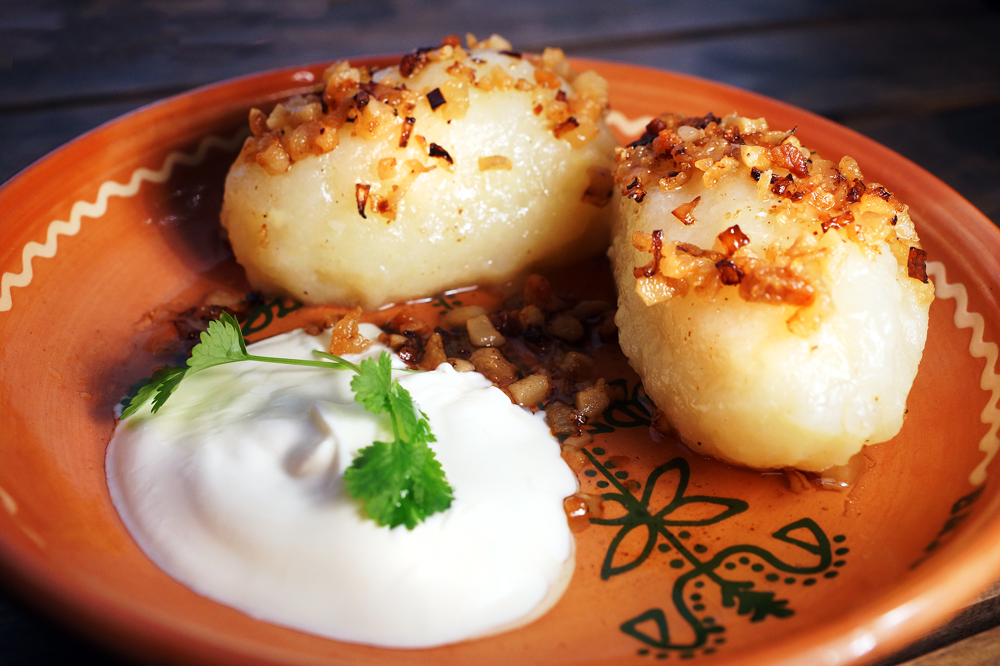
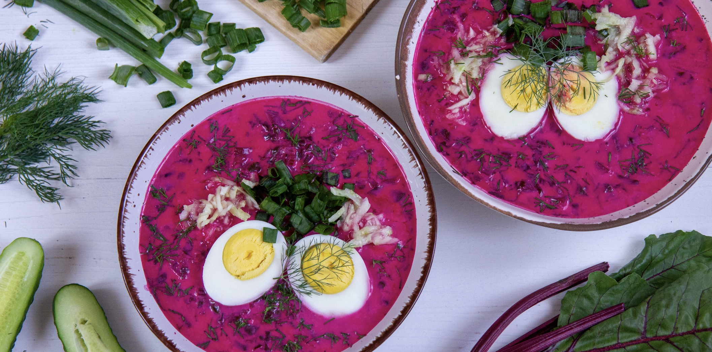
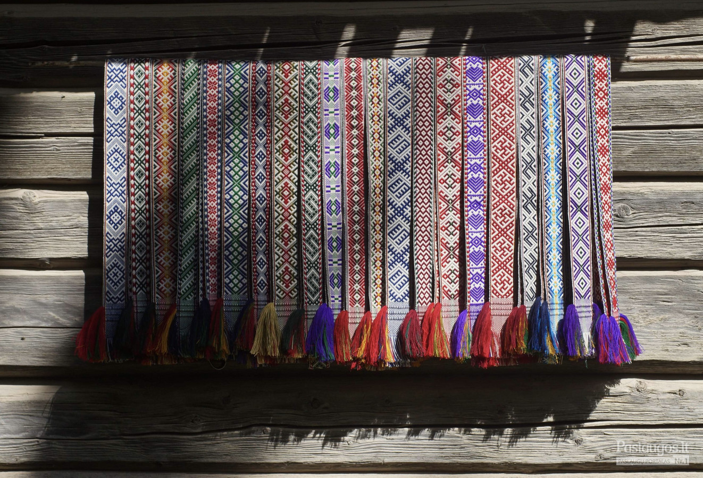
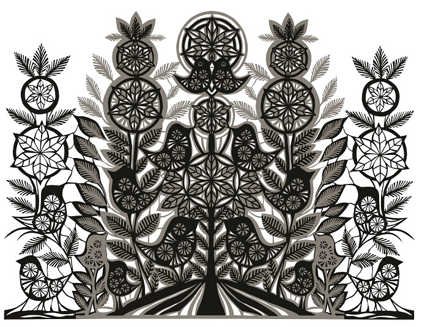

LANDMARKS

According to legend, Grand Duke Gediminas founded Vilnius in the 14th century after dreaming of an iron wolf howling on a hill. Interpreted as a sign of future greatness, the dream led to the city’s establishment around 1323. Vilnius soon became the capital of the Grand Duchy of Lithuania, one of the largest states in Europe at the time. In 1387, Lithuania converted to Christianity under Jogaila. From that moment, Vilnius developed into an important religious and cultural hub. Over the centuries, Lithuanians, Poles, Jews, Russians, and Germans lived in the city. Because of its strong Jewish presence and institutions, it became known as the “Jerusalem of the North.” Today, Vilnius is a vibrant city known for its Baroque Old Town (a UNESCO World Heritage Site), its artistic scene, and its modern European identity.

The present brick church was constructed on the initiative of the King of Poland and Grand Duke of Lithuania Alexander I Jagiellon in 1495–1500. The main façade, designed in the Flamboyant Gothic style, is its most striking feature. Traditional Gothic elements and shapes were used in unique ways. It was built using 33 different kinds of clay bricks and painted in red. The interior is decorated in the Baroque style. One popular legend says that Napoleon Bonaparte was so impressed when he saw the church during his 1812 campaign that he wished he could carry it back to Paris “in the palm of his hand.”
CULINARY DELIGHTS

Cepelinai are the national dish of Lithuania, named after Graff von Zeppelin due to their distinct airship-like shape. They are large, hearty dumplings made from a mixture of raw and boiled grated potatoes, typically stuffed with minced meat, dry curd cheese, or mushrooms. Traditionally served piping hot, they are generously topped with a rich sauce made of sour cream and fried bacon bits (known as spirgai). This comforting dish is a staple of Lithuanian cuisine, reflecting the country's historic reliance on potato farming and its love for filling, warming comfort food. Modern cuisine is ready to offer an extremely wide range of cepelinai with an innumerable variety of meat, cottage cheese, cheese, vegetable, fish or mushroom fillings.

Pink soup is a cold, refreshing pink beetroot soup that is a must when visiting Lithuania! It is made with kefir (fermented milk) and a generous addition of pickled beetroot, which gives the cold soup its bright pink colour. Then you just need to add some crunchy cucumbers and aromatic dill, and don’t forget the hard-boiled egg. In Lithuania, this soup is on the list of holy dishes, along with potato-meat dumplings, potato pie, and potato pancakes. And a necessary attribute of all these dishes are boiled or baked potatoes, which bring out the flavour of the pink soup.
CULTURAL EXPERIENCES

The creative abilities of Lithuanian women were revealed in fabrics. They spun threads from flax, hemp, and wool themselves. They dyed the yarn with plant leaves, flowers, roots, tree bark, moss, and pond ore. Girls began spinning as young girls and packed white canvases, rolls of patterned fabrics, and balls of ribbons into their dowry chests. Lithuanian weaving is a vital expression of the country’s cultural identity, historically intertwined with rural life and festive rituals. Traditionally relying on linen—the ultimate symbol of national textiles—and wool, this craft varies beautifully across Lithuania's ethnographic regions, ranging from the white-and-red geometric patterns of Aukštaitija to the rich, complex floral motifs of Suvalkija. A sacred role is held by traditional woven sashes (juostos), which feature ancient Baltic symbols like suns and serpents and were historically gifted as protective amulets during weddings and births. Today, this rich heritage is kept alive by folk artists.

Contemporary Lithuanian paper-cutting art is dominated by the search for new means of artistic expression and even technical possibilities. In addition to the experience of interpreting traditional applied art ornaments, over the past two decades, paper-cutting has emerged as a visual art, in which decorative tendencies are rapidly spreading.